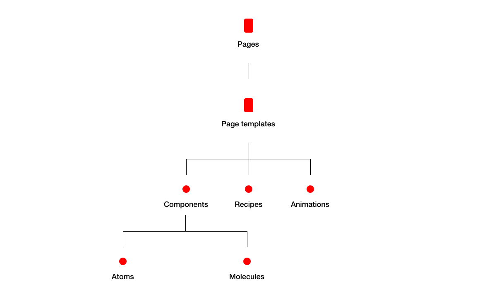

From January to November 2020, I worked within a crossfunctional team to design and build a design system for Uniqlo. My main responsibilities included designing components on both design and development sides, presenting to clients and documenting component usage guidelines.
For large organizations, design systems are the start of a digital transformation. A design system provides better user experience, cross-team workflow and bottom-up empowerment.
The design system for Uniqlo was intended to be used across different countries and Uniqlo's sister companies. Eventually, it will provide different digital teams globally across Uniqlo to improve e-commerce metrics without breaking apart the foundation of their digital products.
Using Brad Frost’s Atomic Design as a baseline, I designed components which includes interaction states, accessibility standards and component names so they could be as easily adaptable. We worked closely with developers to assure quality and flexibility between these components.
After designing over 20 components, I was tasked with the Header and Navigation components, which were considered complex components by the client. These components were designed in consideration for Uniqlo’s CMS platform. The client and our team collaborated on keyboard accessibility, sidebar positioning and content below the fold.
A good design system is more than consistency and alignment of the interface. The quality of a design system can reduce the stress for the everyday work that designers and developers do. It includes clear documentation, refining a working governance model and long-term house keeping.
You can view the design system on Japan’s Uniqlo website.